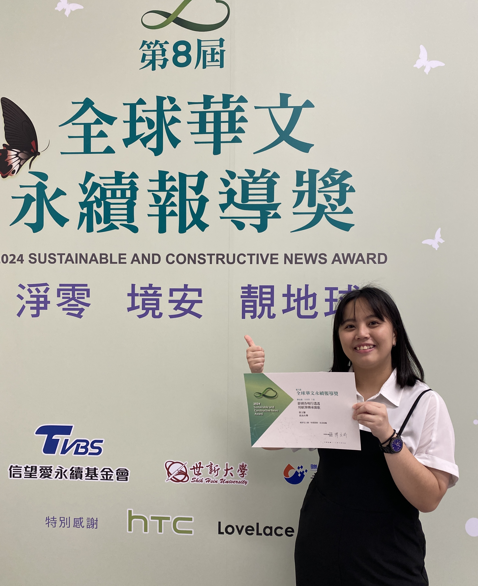

＼用台語・看台灣／
🎙️主持人：文馨
🎧 節目簡介
- 期望運用台語了解每位投身於傳統技藝、語言、文化傳承的每位人物，
他們延續傳統文化的理念、傳承上面臨的困境與堅持下去的理由等，
讓更多人看見他們的努力，
讓聽眾認識台灣各項傳統技藝、語言及文化，
若有熱情也可以投身於此。
✏️節目規劃
📍第一單元「聽！就是這个！」介紹該集主題，及此技藝、文化等相關背景與資訊；
介紹該集人物或團體，簡介其所致力於推廣的傳統技藝及文化等，
帶領聽眾認識當週主題。
📍第二單元「看！臺灣！」
以廣播新聞專題的形式呈現。
使用訪談內容、現場聲音採集作為聲音素材，
以主持人口白掌握單元節奏，讓每位人物的故事好好地走進聽眾心裡。
🏆 節目殊榮
- 入圍2024第八屆TVBS全球華文永續報導獎